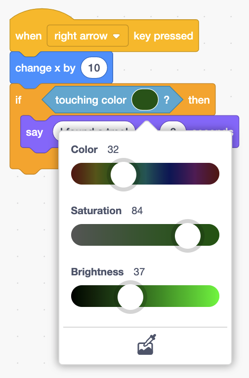
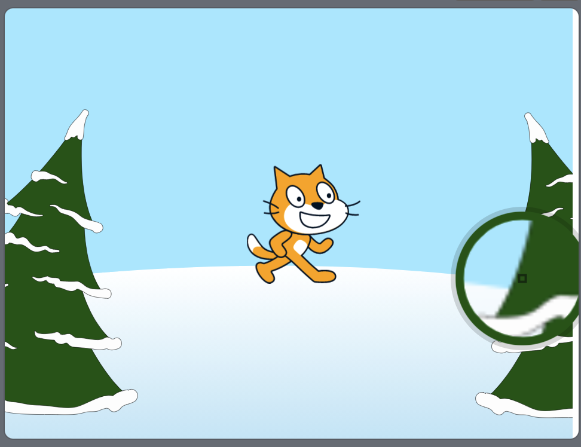
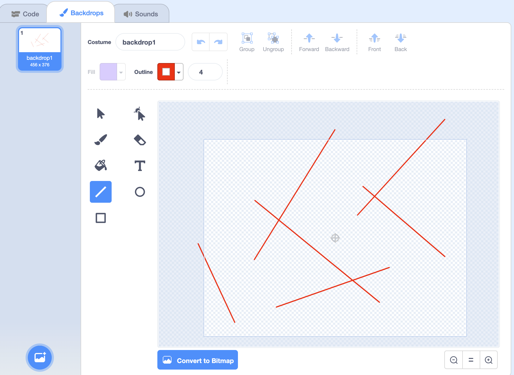

Conditions
Last time
- Last time, we took a look at values, pieces of information that we could use in our Scratch programs.
- Today, we’ll use values to make decisions by asking questions, and deciding what to do based on those answers. For example, we might ask, before going outside, “is it cold outside?” And if the answer is yes, we might wear a jacket.
Touching mouse pointer
- We’ll start with a script that tells our cat to play a sound when the space key is pressed in Meow:
when [space v] key pressed play sound (Meow v) until done - In the Control section of blocks, we have a block called the “if” block that we can use, where there’s a hexagon-shaped region, and another place inside for additional blocks to be nested into:
if <> then - The hexagon represents the question we want to ask, which can be answered with a “yes” or “no”, or equivalently, “true” or “false”.
- In the Sensing section of blocks, we see a few blocks with a hexagon shape. It turns out that these questions we can ask are called Boolean expressions, or a way to describe something that be either true (answered with a “yes”), or false (answered with a “no”).
- We’ll drag the “touching mouse-pointer?” Boolean expression block into the hexagon of the “if” block:
when [space v] key pressed if <touching (mouse pointer v)?> then play sound (Meow v) until done- We’ll also place our “play sound” block inside.
- Now, when we press the space key on our keyboard, our cat will only play a sound if our mouse pointer, or the cursor on the screen, is touching the sprite on the stage.
- We can also check if our sprite is touching another sprite in Cat and Balloon. We’ll add a balloon sprite, and in the dropdown of the “touching mouse-pointer?” block, we can now change the value to:
when [space v] key pressed if <touching (Ballon1 v)?> then play sound (Meow v) until done- Now, our cat will only play the sound if we drag the balloon to it on the stage.
Touching color
- The “touching color?” block will let us check if our sprite is touching anything that is a particular color.
- We’ll keep our cat, and use the “Winter” backdrop. We’ll create this script in a program called Cat and Trees:
when [right arrow v] key pressed change x by (10) if <touching color [#165e0f] ?> then say (I found a tree!) for (2) seconds - We’ll drag in each of these blocks, and for the “touching color?” block, we can click the color to pick a color with the different sliders:

- But it will be hard for us to get the color of the trees exactly, so we can click on the icon of the eyedropper at the bottom of the color sliders, and use that to select a color on the stage with our mouse:

- Now, when the right arrow key is pressed, our cat will move to the right. Every time it moves to the right, it’s also asking the question of whether it’s touching green. Eventually, when it reaches the green tree, the answer to that question will be “yes”, and it will say “I found a tree!”.
Size
- We’ll set our stage to the plain backdrop, and bring back the balloon. We’ll use this script to make the balloon grow in Balloon:
when [space v] key pressed change size by (10) - But we want our balloon to eventually pop, and it turns out that we can use the “=” operator to compare two numbers. We’ll use an “if” block, and inside, drag in these blocks:
when [space v] key pressed change size by (10) if <(size) = (200)> then- Notice that the “=” operator is shaped like a hexagon, so it is also a Boolean expression we can use, with an answer of “yes” or “no”.
- Now, every time the space key is pressed, we’ll check if the size is equal to 200.
- If the size is 200, we can have our balloon sprite hide, and play the pop sound:
when [space v] key pressed change size by (10) if <(size) = (200)> then hide play sound (Pop v) until done- Now, when our balloon reaches a size of 200, it will disappear and play a sound, as though it popped.
If then else
- We also have operators to check if a number is greater or less than another one.
- We’ll use the duck sprite in Numbers, and we’ll start by asking for a number:
when green flag clicked ask [Number:] and wait if <(answer) > (0)> then say [Positive] for (2) seconds- Then, we can check if the answer to that question is greater than 0. If that’s true, then the number will be a positive number, and we can tell the user that it’s positive.
- Now, we’re able to run some code when the answer to a question is yes. But if the answer is no, we might also want to do something else. It turns out that there’s another block in the Control section, called the “if then else” block:
when green flag clicked ask [Number:] and wait if <(answer) > (0)> then say [Positive] for (2) seconds else say [Negative] for (2) seconds- The new section at the bottom, called “else”, will include another stack of blocks for what we want to run when the answer to the question is “no”. So no matter what the answer to the question is, we’ll be running one of two stacks of blocks.
- When the answer to the question is “no”, we have a negative number, so our duck will say “Negative”.
- But now there’s a bug in our program, where 0 causes our duck to say “Negative” as well, since 0 is not greater than 0. We can add yet another “if then else” block inside the “else” section:
when green flag clicked ask [Number:] and wait if <(answer) > (0)> then say [Positive] for (2) seconds else if <(answer) < (0)> then say [Negative] for (2) seconds else say [Zero] for (2) seconds- So now, if the number is not greater than zero, we ask another question, if it’s less than zero. And if that’s true, we can say “Negative”. Otherwise, the number must be 0.
Hedgehog Races
- Let’s add the hedgehog to our stage, and build a program to tell us how quickly we moved it across the stage, Hedgehog Race 1.
- We’ll start with one stack of blocks that bring our hedgehog to the left of the stage:
when green flag clicked go to x: (-150) y: (-25) - When the right arrow key is pressed, we also want our hedgehog to move 10 steps:
when [right arrow v] key pressed move (10) steps - And when our hedgehog reaches the edge of the stage, we want it to say the value of the timer, or how many seconds have passed since we started our program:
when [right arrow v] key pressed move (10) steps if <touching (edge v)?> then say (round (timer)) for (2) seconds- Every time the right arrow key is pressed, our hedgehog will move 10 steps, but also check if it’s touching the edge of the stage.
- If it is, we’ll round the value of the timer, since we don’t really care about the decimal value, and just want the number of seconds in whole numbers. Then we’ll use that value in our “say” block, to see our hedgehog say it once we reach the edge.
- We can add more questions to ask, too, in Hedgehog Race 2:
when [right arrow v] key pressed move (10) steps if <touching (edge v)?> then if <(timer) < (5)> then say [Fast!] for (2) seconds else say [Slow!] for (2) seconds- Now, we have a block that asks if the value of “timer” is less than 5, and if the answer is yes, we’ll say “Fast!”. Otherwise, we’ll say “Slow!”.
Hedgehog Maze
- We’ll add the hedgehog to our program, and build a game with a maze for it with Hedgehog Maze.
- We’ll click on the Stage panel in the bottom right, and use the Backdrops section to draw lines on the backdrop, like a maze:

- We’ll select the line tool, and change the Outline to red, and use our mouse to draw a few lines around the backdrop.
- Now, we’ll change the size of our hedgehog to 40, and add blocks to for it to move to the right when the right arrow key is pressed:
when [right arrow v] key pressed change x by (5) - We’ll also want to check if the hedgehog is touching a wall in our maze. So we’ll use the “touching color?” block:
when [right arrow v] key pressed change x by (5) if <touching color [#ff0000] ?> then go to (random position v)- Now, every time our hedgehog moves, it will check whether it’s touching the color red. If the answer to that is “yes”, we’ll have it go to a random position on the stage.
- We’ll right-click, or control-click, this stack of blocks, and choose the “Duplicate” option, to make a similar stack for the left arrow key:
when [left arrow v] key pressed change x by (-5) if <touching color [#ff0000] ?> then go to (random position v)- Notice that we move to the left by changing the x-value by negative 5.
- We’ll repeat this for the up and down arrows, using the “change y” blocks to move up and down:
when [up arrow v] key pressed change y by (5) if <touching color [#ff0000] ?> then go to (random position v) when [down arrow v] key pressed change y by (-5) if <touching color [#ff0000] ?> then go to (random position v) - Now, we can test this out by pressing our arrow keys, and whenever our hedgehog touches a wall, it will disappear and reappear.
- With these blocks for conditions and Boolean expressions, we can ask questions and make decisions inside our program based on the answers to those questions.